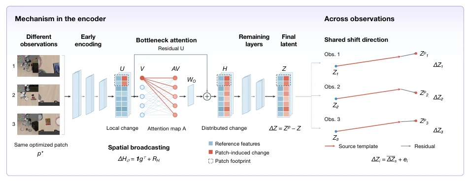
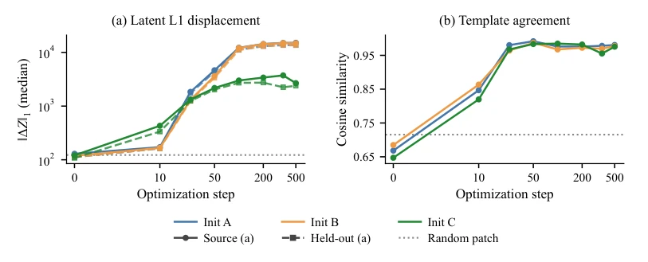
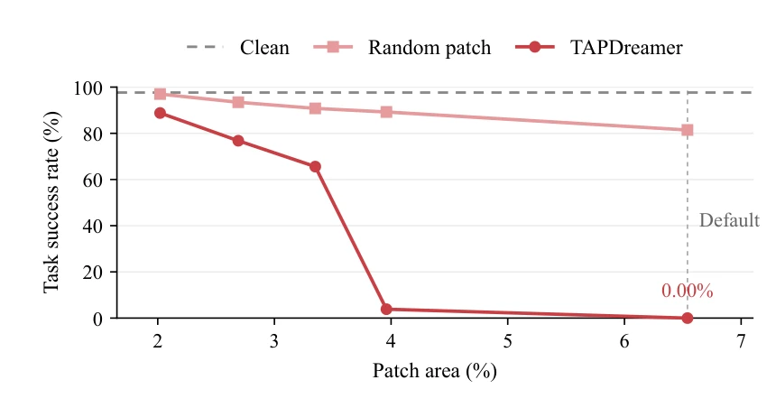
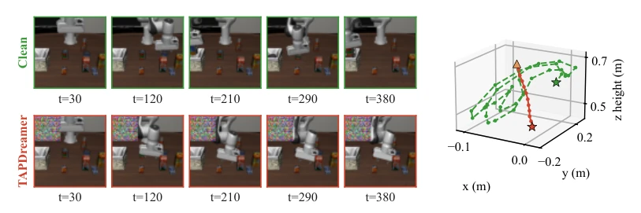

Figure 1: TAPDreamer constructs a patch using a public visual encoder and observations from one source task, then freezes it for deployment across tasks and WAMs within each benchmark. Examples compare clean and patched execution on drawer opening with FastWAM, pot placement with Motus, and bowl placement with DreamWAM.
Figure 2: Overview of TAPDreamer. (a) Pixel updates maximize the latent displacement through a frozen public visual encoder. (b) The resulting patch is frozen and reused at each step across tasks and models within the same benchmark.

Figure 3: Mechanism overview of TAPDreamer. Alocal patch-induced change spreads through bottleneck attention and propagates to the final latent. The changes across observations share a source-template component, with observation-specific residuals.
Figure 7: Evolution of perturbation structure across observations during optimization. For three initializations, the panels show displacement on source and held-out observations, source-template agreement, the effective rank of 48 perturbation fields, and the ratio of the frozen source-template lower bound to measured L1 displacement. In (a), solid and dashed curves denote source and held-out states, respectively. Dotted lines show results with random patches.
其他图片Other Figures

Figure 5: Optimization trajectories for three initializations: (a) latent L1 displacement and (b) source-template agreement. Dotted lines denote random-patch results.

Figure 6: Ablation study of patch area. Random patches use the same area and placement as TAPDreamer.

Figure 8: Example of closed-loop behavior under TAPDreamer. Left: observation sequences under clean and perturbed conditions. Right: corresponding three-dimensional end-effector position trajectories. Green dashed and red solid paths denote Clean and TAPDreamer, respectively. The triangle marks the starting position and stars mark the endpoints; 𝑡counts environment execution steps. Positions are in meters in the world coordinate frame.